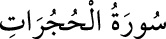

<a name=8626></a><br/>
<b>49- HUCURÂTSÛRESİ</b><br/>
<i><b>Bu sûrede müminlere bazı görgü kuralları, Peygamber’e ve birbirlerine karşı nasıl</b></i><br/>
<i><b>davranacakları öğretilmektedir. Medine’de inmiş olup 18 âyettir. Adını, dördüncü</b></i><br/>
<i><b>âyetteki “odalar” anlamına gelen “hucurât” kelimesinden alır.</b></i><br/>
